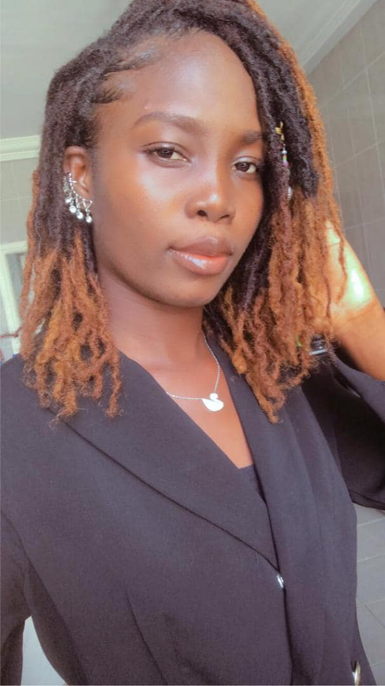

OULAYE LOÏS

Etudiante en master 2 à l'UVCI precisement en BIG DATA
MON EXPEREIENCE
- 2018-2021: LICENCE 1
- 2017-2018: BAC
2014-2015: BEPC
MES COMPETENCES
certifie en infoographie et management de gestion d'
MA FOEMATION
- open classroom
- geek de cocody
- woman geek
DIVERS
Passionnée du digital et de la programation web, j'aime aussi la mode tout ce qi est en relaton avec la beauté.